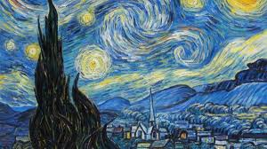
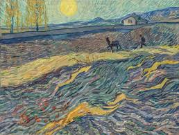
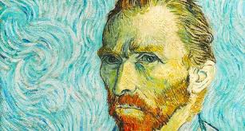
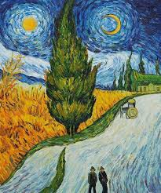
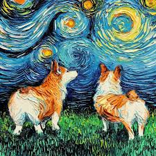

VICENT VAN GOGH
Vincent van Gogh era el mayor de los seis hijos de un pastor protestante, y mantuvo con su hermano Theo, cuatro años menor que él, una relación que sería determinante en su existencia y en su trayectoria artística. La correspondencia que ambos intercambiaron a lo largo de sus vidas testimonia la intimidad de esta relación y las pasiones y angustias humanas y creativas que atormentaron a Van Gogh en sus últimos años. Tras recibir una esmerada educación en un internado privado, a los dieciséis años entró como aprendiz en la filial de La Haya de la galería de arte parisina Goupil, una sociedad de comerciantes de arte fundada por su tío Vincent.
En 1873 pasó a la sucursal de la galería Goupil en Londres, donde hubo de padecer el primero de sus fracasos sentimentales; en 1875 fue trasladado a la filial parisina; en 1876 se despidió y regresó a Holanda. Trabajó después como profesor, ayudante de un pastor metodista y empleado de una librería; ninguno de estos empleos le duró mucho tiempo. Por aquel entonces sentía sobre todo la necesidad espiritual de entregarse a sus semejantes; de hecho, siempre había querido ser pastor, como su padre, y tal vocación lo llevó a Ámsterdam para seguir los estudios de teología, que suspendió.
Pasó entonces a la Escuela de Evangelización Práctica de Bruselas, y en 1878 fue enviado por sus superiores a la zona minera del Borinage. Establecido en el pueblo de Pâturages, próximo a Mons, realizó una serie de dibujos de los mineros. La Escuela de Evangelización lo expulsó por su excesiva implicación: impresionado por sus infrahumanas penurias, Van Gogh llegó a dar a los mineros lo poco que tenía y a vivir más pobremente que ellos.

Fecha de nacimiento: 25 de octubre de 1881, Málaga, España
Fallecimiento: 8 de abril de 1973, Mougins, Francia
Movimiento: Cubismo
Residencia: Castillo de Vauvenargues
Hijos: Paloma Picasso, Paulo Ruiz Picasso, Maya Widmaier-Picasso, Claude Picasso
Cónyuge: Jacqueline Roque (m. 1961–1973), Olga Jojlova (m. 1918–1955)
Entre sus pinturas mas famosas están las siguientes




